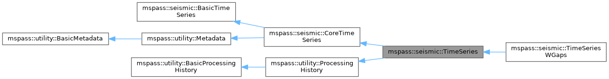
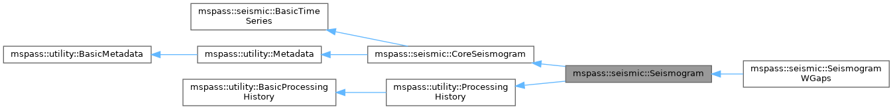

Data Object Design Concepts#
Overview#
TimeSeries and Seismogram respectively.The waveform data (normally the largest in size).
A generalization of the traditional concept of a trace header. These are accessible as simple name-value pairs but the value can be heterogeneous. It is a bit like a Python dictionary, but implemented with standard C++.
An error logger that provides a generic mechanism to post error messages in a parallel processing environment.
An optional object-level processing history mechanism.
Ensemble. The implementation in C++ uses a template to define a
generic ensemble. A limitation of the current capability to link C++
binary code with Python is that templates do not translate directly.
Consequently, the Python interface uses two different names to define
Ensembles of TimeSeries and Seismogram objects:
TimeSeriesEnsemble
and SeismogramEnsemble respectively.History#
Make the API as generic as possible.
Use inheritance more effectively to make the class structure more easily extended to encapsulate different variations in seismic data.
Divorce the API completely from Antelope to achieve the full open source goals of MsPASS. Although not implemented at this time, the design will allow a version 2 of SEISPP in Antelope, although that is a “small matter of programming” that may never happen.
Eliminate unnecessary/extraneous constructors and methods developed by the authors as the class structure evolved organically over the years. In short, think through the core concepts more carefully and treat SEISPP as a prototype.
Extend the Metadata object (see below) to provide support for more types (objects) than the lowest common denominator of floats, ints, strings, and booleans handled by SEISPP.
Reduce the number of public attributes to make the code less prone to user errors. Note the word “reduce” not “eliminate” as many books advise. The general rule is simple parameter type attributes are only accessible through getters and setters while the normally larger main data components are public. That was done to improve performance and allow things like NumPy operations on data vectors.
ObsPy handles related metadata through a set of Python objects. MsPASS instead aims to simplify the management of Metadata as much as possible. Our goal was to make the system more like seismic reflection processing systems that manage the same problem through a simple namespace wherein metadata can be fetched with simple keys. We aimed to hide any hierarchic structures (e.g relational database table relationships, ObsPy object hierarchies, or MongoDB normalized data structures) behind the Python schema objects to reduce all Metadata to name:value pairs.
ObsPy represents both three-component groups and larger collections with its general-purpose
Streamcontainer. MsPASS distinguishes the concepts represented bySeismogramand an ensemble. For example, a collection of single component data like a seismic reflection shot gather is a very different thing than a set of three component channels that define the output of three sensors at a common point in space. Hence, we carefully separateTimeSeriesandSeismogram(our name for Three-Component data). We further distinguishEnsemblesof each atomic type.
Core Concepts#
Overview - Inheritance Relationships#


BasicTimeSeries and
Metadata. The top-level Seismogram and TimeSeries classes add
ProcessingHistory, which in turn derives from
BasicProcessingHistory and owns the object’s error logger. C++ supports multiple
inheritance and the wrappers make dynamic casting within the hierarchy
(mostly) automatic. e.g. a Seismogram object can be passed directly to a
Python function that does only Metadata operations and it will be
handled seamlessly because Python does not enforce type signatures on
functions. CoreTimeSeries and CoreSeismogram should be thought of as
defining core concepts independent from MsPASS. The top-level classes
inherit the MsPASS-specific history components from ProcessingHistory. ProcessingHistory
implements two important concepts that were a design goal of MsPASS:
(a) a mechanism to preserve the processing history of a piece of data
to facilitate more reproducible science results, and (b) a parallel safe
error logging mechanism. A key point of the design of this class
hierarchy is that future users could choose to omit
the ProcessingHistory component and reuse CoreTimeSeries and
CoreSeismogram to build a
completely different framework.TimeSeries and Seismogram objects. The lower levels sometimes
but not always have Python bindings.BasicTimeSeries - Base class of common data characteristics#
This base class can be viewed as an answer to this question: What is a time series? Our design answers that question by saying that all time-series data have the following elements:
We define a time series as data that has a fixed sample rate. Some people extend this definition to arbitrary x-y data, but MsPASS uses the narrower uniformly sampled definition. Standard textbooks on signal processing focus exclusively on uniformly sampled data. With that assumption the time of any sample is virtual and does not need to be stored. Hence, the base object has methods to convert sample numbers to time and the inverse (time to sample number).
Data processing always requires the time series have a finite length. Hence, our definition of a time series directly supports windowed data of a specific length. The getter for this attribute is
npts()in C++ (thenptsproperty in Python), and the setter isset_npts(size_t). This definition does not preclude working with modern continuous data sets that are too large to fit in memory. MsPASS readers divide those data into finite in-memory objects; see Continuous Data Handling with MsPASS.The atomic TimeSeries and Seismogram classes assume the data have been cleaned and lack encoded data gaps. Real continuous data today nearly always have gaps at a range of scale created by a range of possible problems that create gaps: telemetry gaps, power failures, instrument failures, time tears, and with older instruments data gaps created by station servicing. MsPASS also exposes
TimeSeriesWGapsfor gap-aware operations, but that class is not one of the standard atomic database types. Since the main goal of MsPASS is to provide a framework for efficient processing of large data sets, we pass the job of finding and/or fixing data gaps to other packages or algorithms using MsPASS with a “when in doubt throw it out” approach to editing. The machinery to handle gap processing exists in both ObsPy and Antelope and provide possible paths to solutions for users needing more extensive gap processing functionality.
live() and dead() in C++).
Python exposes live as a property and dead() as a method. The
setters to force live (set_live()) or dead (kill()). An important
thing to note is that an algorithm should always test if a data object
is defined as live. Some algorithms may choose to simply pass data marked
dead along without changing or removing it from the workflow.
Failure to test for the live condition can cause mysterious aborts when
an algorithm attempts to process invalid data.Handling Time#
TimeReferenceType, with matching names in Python. There are
currently two options:When the reference is
TimeReferenceType::Relative(TimeReferenceType.Relativein Python), the computed times are offsets from some well defined time mark. The most common relative standard is the implicit time standard used in all seismic reflection data: shot time. SAC users will recognize this idea as the case when IZTYPE==IO. Another important one used in MsPASS is an arrival time reference, which is a generalization of the case in SAC with IZTYPE==IA or ITn. We intentionally do not limit what this standard actually defines as how the data are handled depends only on the choice of UTC versus Relative. The ASSUMPTION is that if an algorithm needs to know the answer to the question, “Relative to what?”, that detail will be defined in a Metadata attribute.When the reference is
TimeReferenceType::UTC(TimeReferenceType.UTCin Python), all times are assumed to be an absolute time standard defined by coordinated universal time (UTC). We follow the approach used in Antelope and store the time axis as Unix epoch seconds. We use this simple approach for two reasons: (1) storage (times can be stored as a simple double precision (64 bit float) field), and (2) efficiency (computing relative times is trivial compared to handling calendar data). ObsPy represents absolute start times withUTCDateTime. Use that class when a Python workflow needs to convert between epoch seconds and calendar fields.
time_is_relative() returns true if the time base is relative, and
time_is_UTC() returns true if the time standard is UTC.Metadata Concepts#
Metadata object is best thought of through either of two
concepts well known to most seismologists: (1) headers (SAC), and (2)
a dictionary container in Python. Both are ways to handle a general,
modern concept of
metadata commonly defined
as “data that provides information about data”. Packages like SAC use
fixed (usually binary fields) slots in an external data format to
define a finite set of attributes with a fixed namespace. ObsPy uses
a Python dictionary-like container called Stats
to store comparable information. That approach allows metadata
attributes to be extracted from a flexible container addressable by a
keyword and that can contain a range of value types. For example, a typical
ObsPy script will contain a line like the following to fetch the station
name from a Trace object d.sta = d.stats["station"]
mspass::utility::Metadata object has a container that can hold
heterogeneous values much like a Python dictionary. The current implementation uses
the any library that
is part of the widely used boost library. In a C++ program Metadata
can contain any data that, to quote the documentation from boost, is “copy
constructable”. Thus Metadata acts much like a Python dict using put
and get operations within a Python program.d={'time':10}
type(d['time'])
Within an individual application managing the namespace of attributes and type associations should be as flexible as possible to facilitate adapting legacy code to MsPASS. We provide a flexible aliasing method to map between attribute namespaces to make this possible. Any such application, however, must exercise care in any alias mapping to avoid type mismatch. We expect such mapping would normally be done in Python wrappers.
Attributes stored in the database should have predictable types whenever possible. We use a Python schema class described below to manage the attribute namespace without making ordinary metadata use unnecessarily rigid. Details are given below when we discuss the database readers and writers.
Care with type is most important in interactions with C/C++ and Fortran implementations. Pure Python code can be flexible about type, sometimes at the cost of efficiency. Python is thus the language of choice for working out a prototype, but when bottlenecks are found key sections may need to be implemented in a compiled language. In that case, the Schema rules provide a sanity check to reduce the odds of problems with type mismatches.
# Assume d is a Seismogram or TimeSeries, both of which expose Metadata.
x = d.get_double("t0_shift") # floating-point time shift
n = d.get_long("evid") # integer event identifier
s = d.get_string("sta") # UTF-8 string
b = d.get_bool("LPSPOL") # SAC positive-polarity flag
d.put_double("t0_shift", x)
d.put_long("evid", n)
d.put_string("sta", s)
d.put_bool("LPSPOL", True)
d.put("names", name_list)
# Or use the mapping-style interface.
d["names"] = name_list
x = d.get("names")
# Or use the mapping-style interface.
x = d["names"]
mspass::utility::Metadata object
can be constructed directly from a Python dict. That is used, for example,
in MongoDB database readers because a MongoDB “document” is returned as a
Python dict in MongoDB’s Python API.Managing Metadata Types with mspasspy.db.schema#
MetadataSchema instance is automatically
loaded with the Database class that acts
as a handle to interact with MongoDB. Here we introduce the schema methods
most useful when developing a workflow.from mspasspy.db.schema import MetadataSchema
schema = MetadataSchema()
MetadataSchema currently has two main definitions that can be extracted
from the class as follows:mdseis = schema.Seismogram
mdts = schema.TimeSeries
mdseis and mdts symbols above are instances of
the MDSchemaDefinition class.mdseis and mdts
objects contain methods that can be used to get a list of restricted symbols
(the keys() method), the type that the framework expects that symbol
to define (the type() method), and a set of other utility methods.MDSchemaDefinition class that deserves
particular discussion is a set of methods designed to handle aliases.
These methods exist to simplify the support in the framework for adapting
other packages that use a different set of names to define a common
concept. For example, although at this writing we haven’t attempted this
the design was intended to support things like automatic mapping of
MsPASS names to and from SAC header names. We expect similar capabilities
should make it feasible to map CSS3.0 attributes (e.g. Antelope’s Datascope
database implementation uses the CSS3.0 schema) loaded from relational
database joins directly into the MsPASS namespace. The methods used to
handle aliases are readily apparent from the documentation page linked
above as they all contain the keyword alias.Scalar versus 3C data#
time method in BasicTimeSeries
can be used to convert an index to a time defined as a double). In MsPASS,
the integer index always uses the C convention starting at 0 and not 1 as in Fortran,
linear algebra, and many signal processing books.
We use a C++ standard template library vector
container to
hold the sample data accessible through the public variable s in the C++ API. The
Python API makes the vector container look like a NumPy array that can
be accessed in the same way sample data are handled in an ObsPy Trace
object in the “data” array. It is important to note that the C++ s vector is
mapped to data in the Python API. The direct interface through NumPy/SciPy
allows one to manipulate sample data with those libraries. See
Using NumPy and SciPy with MsPASS for array behavior and Parallel Processing
before placing such an algorithm in a distributed workflow.Most modern seismic reflection systems provide some support for three-component data. In reflection processing scalar, multichannel raw data are often treated conceptually as a matrix with one array dimension defining the time variable and the other index defined by the channel number. When three component data are recorded the component orientation can be defined implicitly by a component index number. A 3C shot gather than can be indexed conveniently with three array indexes. A complication in that approach is that which index is used for which of the three concepts required for a gather of 3C data is not standardized. Furthermore, for a generic system like MsPASS the multichannel model does not map cleanly into passive array data because a collection of 3C seismograms may have irregular size, may have variable sample rates, and may come from variable instrumentation. Hence, a simple matrix or array model would be very limiting and is known to create some cumbersome constructs.
Traditional multichannel data processing emerged from a world where instruments used synchronous time sampling. Seismic reflection processing always assumes during processing that time computed from sample numbers is accurate to within one sample. Furthermore, the stock assumption is that all data have sample 0 at shot time. That assumption is a necessary condition for the conceptual model of a matrix as a mathematical representation of scalar, multichannel data to be valid. That assumption is not necessarily true (in fact it is extremely restrictive if required) in passive array data and raw processing requires efforts to make sure the time of all samples can be computed accurately and time aligned. Alignment for a single station is normally automatic although some instruments have measurable, constant phase lags at the single sample level. The bigger issue for all modern data is that the raw data are rarely stored in a multiplexed multichannel format, although the SEED format allows that. Most passive array data streams have multiple channels stored as compressed miniSEED packets that have to be unpacked and inserted into something like a vector container to be handled easily by a processing program. The process becomes more complicated for three-component data because at least three channels have to be manipulated and time aligned. ObsPy handles this issue with a general
Streamcontainer of single-channelTraceobjects.
Seismogram. The data are directly accessible in C++ through a public
variable called u that is mnemonic for the standard symbol used in the
classic seismology text by Aki and Richards. In Python we use the
symbol data for consistency with TimeSeries.
There are two choices of the order of indices for this matrix.
The MsPASS implementation makes this choice: a Seismogram
defines index 0 as the component number and index 1 as the time
index. The following Python code section illustrates this more
clearly than any words:from mspasspy.ccore.seismic import Seismogram
d = Seismogram(100) # Allocate 3 x 100 samples, initialized to zero.
d.data[0, 50] = 1.0 # Put an impulse at t0 + dt * 50 in component 0.
data matrix with NumPy, noting that its storage is Fortran ordered.components_are_orthogonal is true after any sequence of orthogonal
transformations and components_are_cardinal is true when the
components are in the standard ENZ directions.The process of creating a Seismogram from a set of TimeSeries objects in a robust way is not trivial. Real data issues create a great deal of complexity to that conversion process. Issues include: (a) data with a bad channel that have to be discarded, (b) stations with multiple sensors that have to be sorted out, (c) stations with multiple sample rates (nearly universal with modern data) that cannot be merged, (d) data gaps that render one or more components of the set incomplete, and (e) others we haven’t remembered or which will appear with some future instrumentation. MsPASS provides
bundle_seed_data()for a complete TimeSeriesEnsemble andBundleSEEDGroup()for a grouped subset.
template <typename Tdata> class Ensemble : public Metadata
{
public:
vector<Tdata> member;
// ...
Tdata& operator[](const size_t n) const
// ...
}
n = len(d.member)
for i in range(n):
somefunction(d.member[i]) # Pass member i to somefunction.
The wrappers also make the ensemble members “iterable”. Hence the above block could also be written:
for x in d.member:
somefunction(x)
Core versus Top-level Data Objects#
TimeSeries and
Seismogram extend their
core parents by inheriting ProcessingHistory. That base class also
owns the ErrorLogger exposed as elog:ProcessingHistory, as the name implies, can optionally store the chain of processing steps applied to put a data object in its current state. The history has two completely different components described in more detail elsewhere in this User’s Manual: (a) global job information designed to allow extracting the full instance of the job stream under which a given data object was produced, and (b) a chain of parent waveforms and algorithms that modified them to get the data in the current state. Maintaining processing history is a complicated process that can lead to memory bloat in complex processing if not managed carefully. For this reason this feature is off by default. Our design objective was to treat object level history as a final step to create a reproducible final product. That would be most appropriate for published data to provide a mechanism for others to reproduce your work, archival data to allow you or others in your group to start up where you left off, or just for a temporary archive to preserve what you did. See Processing History Concepts for the supported runtime and persistence contract.ErrorLoggeris an error logging object. The purpose of the error logger is to maintain a log of any errors or informative messages created during processing. MsPASS decorators and processing algorithms normally turn datum-specific failures into error-log entries and dead data, allowing a distributed job to continue. Invalid function arguments, programmer errors, and unrecoverable system failures can still raise an exception; callers should not assume that every exception is swallowed. In our design we considered making the ErrorLogger a base class for Seismogram and TimeSeries, but it does not satisfy the basic rule of making a concept a base class if the child “is a” ErrorLogger. It does, however, perfectly satisfy the idea that the object “has an” ErrorLogger. BothTimeSeriesandSeismogramuse the symbolelogas the name for the ErrorLogger object (For example, if d is aSeismogram, d.elog refers to the error logger component of d.) See Handling Errors for the severity levels and decorator behavior.
Object-Level History Design Concepts#
As summarized above the concept we wanted to capture in the history mechanism was a means to preserve the chain of processing events that were applied to get a piece of data in a current state. Our design assumes the history can be described by an inverted tree structure. That is, most workflows would merge many pieces of data (a reduce operation in map-reduce) to produce a given output. The process chain could then be viewed as tree growth with time running backward. The leaves are the data sources. Each growth season is one processing stage. As time moves forward the tree shrinks from many branches to a single trunk that is the current data state. The structure we use, however, is more flexible than real tree growth. Many-to-many mixes of data will produce a tree that does not look at all like the plant forms of nature, but we hope the notion of growth seasons, branch, and trees is useful to help understand how this works.
To reconstruct the steps applied to data to produce an output the following foundational data is required:
We need to associate the top of the inverted tree (the leaves) that are the parent data to the workflow. For seismic data that means the parent time series data extracted from a data center with web services or assembled and indexed on local, random access (i.e. MsPASS knows nothing about magnetic tapes) storage media.
MsPASS assumes all algorithms can be reduced to the equivalent of an abstraction of a function call. We assume the algorithm takes input data of one standard type and emits data of the same or different standard type. (“type” in this context means TimeSeries or Seismogram; an ObsPy Trace is an external type that a converter can map to TimeSeries.) The history mechanism is designed to preserve what the primary input and output types are.
Most algorithms have one to a large number of tunable parameters that determine their behavior. Reproducibility requires preserving that parameter set. Object-level history stores an algorithm name and identifier; the corresponding parameter record is managed separately as global history.
The same algorithm may be run with different parameters and behave very differently (e.g. a bandpass filter with different passbands). The history mechanism needs to distinguish these different instances while linking them to the same parent processing algorithm.
Some algorithms (e.g. what is commonly called a stacker in seismic reflection processing) merge many pieces of data to produce one or more outputs. A CMP stacker, for example, would take an array of normal moveout corrected data and average them sample-by-sample to produce one output for each gather passed to the processor. This is a many to one reducer. There are more complicated examples like the plane-wave decomposition Wang and Pavlis developed in the mid 2010s. That algorithm takes full event gathers, which for USArray could have thousands of seismograms, as inputs, and produces an output of many seismograms that are approximate plane wave components at a set of “pseudostation” points. The details of that algorithm are not the point, but it is a type example of a reducer that is a many-to-many operation. The history mechanism must be able to describe all forms of input and output from one-to-one to many-to-many.
Data have an origin that is assumed to be reproducible (e.g. download from a data center) but during processing intermediate results are by definition volatile. Intermediate saves of final results need to be defined by some mechanism to show the result were saved at that stage. The final result needs a way to verify it was successfully saved to storage.
Although saving intermediate results is frequently necessary, the process of saving the data must not break the full history chain.
The history mechanism must work for any normal logical branching and looping scenario possible with a Python script.
Naive preservation of history data could cause a huge overload in memory usage and processing time. The design then needs to make the implementation as lightweight in memory and computational overhead as possible. The implementation needs to minimize memory usage as some algorithms require other inputs that are not small. Notably, the API was designed to support input that could be described by any Python class. A key concept is that our definition of “parameters” is broader than just a set of numbers. It means any data that is not one of the atomic types (currently TimeSeries and Seismogram objects) is considered a parameter.
A more subtle feature of the schedules supported in MsPASS for parallel processing is that data objects need to be serializable. For Python programmers that is synonymous with “pickleable”. The most common G-tree algorithms we know of use linked lists of pointers to store the information we use describe object-level history. A different mechanism is needed that is an implementation detail described in the detailed section on
ProcessingHistory.
Error Logging Concepts#
ErrorLogger object. C++ and
Python processing modules should use appropriate error handlers (try/catch
in C++ and try/except in Python) for expected datum-specific failures so a
single bad datum does not prematurely kill a large processing job. They
should not hide programming errors or invalid workflow configuration. We
recommend all error handlers in processing functions post a message
that can help debug the error. Error messages should be registered
with the data object’s elog object. Error messages should not
normally be posted only to stdout (i.e. print() in Python) for two
reasons. First, output from multiple workers can interleave and is difficult
to associate with a datum. Second, with a
large dataset it can become nearly impossible to find which
pieces of data created the errors. Proper application of the
ErrorLogger object will eliminate both of these problems.from mspasspy.ccore.utility import MsPASSError
alg = "rotate_to_standard"
try:
d.rotate_to_standard()
d.elog.log_verbose(alg, "rotation completed")
except MsPASSError as err:
d.elog.log_error(err)
d.kill()
Seismogram
object with a singular transformation matrix created, for example, by
incorrectly building the object with two redundant east-west
components. The rotate_to_standard method tries to compute a matrix
inverse of the transformation matrix, which will generate an
exception of type MsPASSError (the primary exception class for MsPASS).
This example catches that exception with the expected type and passes it
directly to the ErrorLogger (d.elog). Catch only exceptions the
operation is documented to raise; a broad except Exception can hide
a programming error.elog collection. Each saved document uses the applicable waveform
identifier field (for example, wf_TimeSeries_id) to link the messages
to their waveform document. See CRUD Operations in MsPASS for the persistence
and Undertaker workflows.